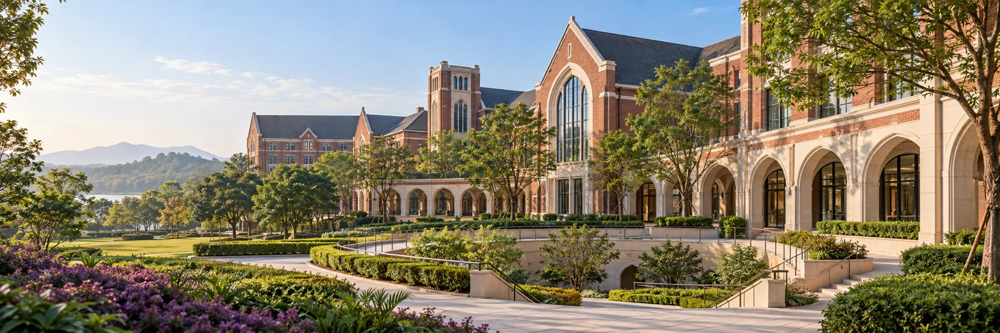

校园意象与版本
V10G10 · 青云班
熟悉的校园气质，清晰的数学阅读。
参考清澜山学校官网的校园与高中页面，用深紫、暖白、细金线及红砖校园意象，营造安静的学习空间。题目与解析区保持高对比和充足留白。

版本记录
当前页面：V10 · 清澜山校园视觉版。沿用 V9 题库、分步答案及个人备注功能，未增加新的学习功能。
美化前基准：V9 · 分步解析与个人备注版，已保留独立存档。
恢复网页视觉版本不会自动删除或回滚账户、收藏、已做及备注记录。
G10 · 青云班
参考清澜山学校官网的校园与高中页面，用深紫、暖白、细金线及红砖校园意象，营造安静的学习空间。题目与解析区保持高对比和充足留白。

当前页面：V10 · 清澜山校园视觉版。沿用 V9 题库、分步答案及个人备注功能，未增加新的学习功能。
美化前基准：V9 · 分步解析与个人备注版，已保留独立存档。
恢复网页视觉版本不会自动删除或回滚账户、收藏、已做及备注记录。